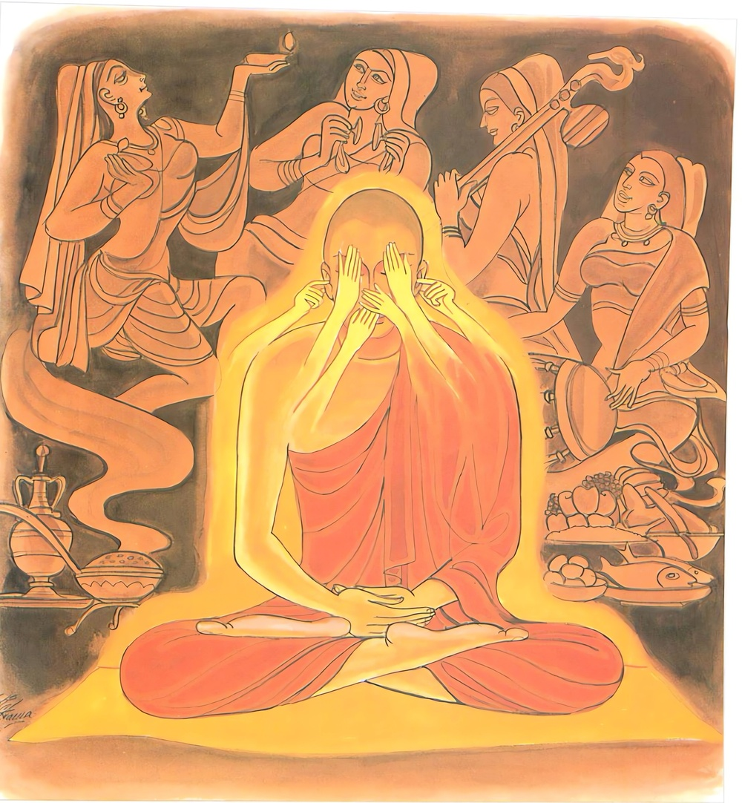
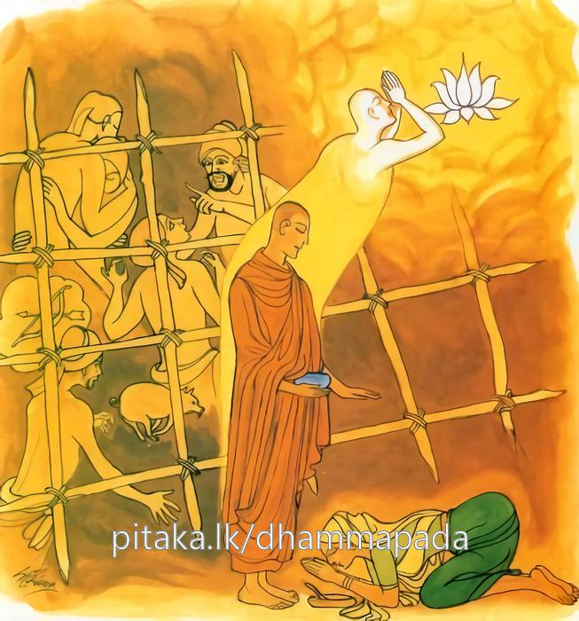

25-1 භික්ෂූන් පස් දෙනාගේ කථා පුවත
මෙම කතාව සද්ධර්ම සාගරයෙන් ද කියවන්න.
චක්ඛුනා සංවරො සාධු සාධු සොතෙන සංවරො
ඝාණෙන සංවරො සාධු සාධු ජිව්හාය සංවරො.
ඇසින් (චක්ෂුර්ද්වාරයෙන්) සංවරය යහපති. කණින් (ශ්රෝත්රද්වාරයෙන්) සංවරය යහපති. නැහැයෙන් (ඝ්රාණද්වාරයෙන්) සංවරය යහපති. දිවින් (ජිහ්වාද්වාරයෙන්) සංවරය යහපති.

කායෙන සංවරො සාධු සාධු වාචාය සංවරො
මනසා සංවරො සාධු සාධු සබ්බත්ථ සංවරො.
සබ්බත්ථ සංවුතො භික්ඛු සබ්බදුක්ඛා පමුච්චති.
කයින් (කායද්වාරයෙන්) සංවරය මැනැවි. වචසින් (වාග්ද්වාරයෙන්) සංවරය යහපති. සිතින් (මනෝද්වාරයෙන්) සංවරය යහපති. චක්ෂුරාදි වූ සදොර රැකීම මැනැවි. චක්ෂුරාදි සදොරෙහි ම සංවෘත වූ භික්ෂු තෙම සියලු සසර දුකින් මිදෙයි.

"වක්ඛුනා සංවරෝ” යන මේ ධර්ම දේශනය ශාස්තෲන් වහන්සේ දෙව්රම වැඩ සිටියදී භික්ෂූන් පස්නමක් නිමිති කරගෙන දේශනා කළහ.
මෙම භික්ෂූන් අතර එක් එක් භික්ෂුවක් චක්ඛු ද්වාර ආදී පඤ්ච ද්වාර අතුරින් එක් එක් ද්වාරයක් ආරක්ෂා කළහ. මේ අතර දිනක් රැස්වී මම දුෂ්කර දෙයක් ආරක්ෂා කරමි මම දුෂ්කර ඉන්ද්රියන් රකිමියි. විවාද කර බුදුන්ගෙන් විමසා මෙහි අර්ථය දැනගනිමුයි තථාගතයන් වහන්සේ වෙත පැමිණ - ස්වාමීනි අපි චක්ඛු ද්වාර ආදී පඤ්ච ද්වාර ආරක්ෂා කර තම තමන් රක්ෂණය කරන වාරයම වඩාත් දුෂ්කර යයි සිතමු. මේ වාර අතරින් කවර වාරයක් ආරක්ෂාව අපහසු දැයි විමසුහ. බුදුහු එකම භික්ෂුවකට ද අපහාස නොකර - මහණෙනි මේ සියළු ඉන්ද්රිය සංවර කිරීම - දුෂ්කර වේ. මහණෙනි ඔබ දැන් පමණක් නොව පෙරද පස්තැනක අසංවර වූහ. එනිසා පඩිවරුන්ගේ අවවාදයේ නොපිහිටා ජිවිතක්ෂයට පත්වුණි. ස්වාමීනි කවරදාද ඔවුන්ගේ ඉල්ලීම අනුව අතීතය පෙන්වා දුන්හ. අතීතයේ (මා දුන් අවවාද නො පිළිගෙන) රකුසියගේ වසඟයට පත්ව තොප ජීවිතක්ෂයට පත් වු අතර, රකුසිය කෙරෙහි නො ඇලුනු මම තක්සිලාවේ රජකමට පත්ව, ශ්වේතඡත්රය යට සිංහාසනයේ හිඳිමින් තමන්ගේ රජසිරි සැපත් බලා වීර්යය නම් සෑම කෙනෙකු විසින්ම කළ යුතුයයි කියා උදාන වශයෙන් මේ ගාථාව පැවසුහ.
දැඩි ලෙස ධාරණී ප්රඥාවෙන් ද කුශල උපදේශයේ ද සිටිය හෙයින් බියපත් නොවී රාක්ෂියන්ගේ වසඟයට නොගොස් මහත් සම්පත් ලැබීම්.
මේ ගාථාව දක්වා එදාද තෙපි දෙනා තක්ෂිලාවේ රාජ්යය ගැනීම සඳහා නික්මී මහා සත්ත්වයන් පිරිවරා ආයුධ ඇතිව මග යන්නේ අතරමග රාක්ෂීන් විසින් චක්ඛු ද්වාරාදී වශයෙන් පැමිණි රූපාදී අරමුණුවල අසංවර වී පඬිවරුන්ගේ අවවාද නොපිහිටා වසග වී රකුසියන් විසින් කන ලද්දේ මරණයට පැමිණියහ. එම අරමුණුවල සංවර වී පසුපස ලුහුබැදී දෙව්දුවක් බඳු රකුසිය නොසලකා හොඳින් තක්ෂිලාවට ගොස් රාජ්යයට පත් වූයේ මමම යයි මේ තක්ෂිලා ජාතකය සසඳා මහණෙනි භික්ෂුවක් විසින් සියළු ද්වාර සංවර කළ යුතුය. මෙම ද්වාර සංවර කරන්නේ සියළු දුකින් මිදේ යයි පවසා ධර්ම දේශනා කරන්නේ මේ ගාථාව පැවසුහ.
ඇස, කණ - නහය දිව සංවර කළ යුතුය
කය සහ මනස සදොරම රැකගත යුතුය
සංවර කරන ලද සිත මහබල ගතුය
සදොරම සංවරය මහණෙකු කළ යුතුය
"චක්ඛුනා සංවරො සාධු - සාධු සොතෙන සංවරෝ” ඇසින් සංවර වීම යහපත්ය. කනින් දිවෙන් සංවරවීම යහපත්ය නහයෙන් සංවරවීම යහපත්ය. දිවෙන් සංවරවීම වැදගත්ය. කයින් වචනයින් මනසින් සංවරවීම වැදගත්ය. මේ වාරිත්රයෙන් සංවර වූ භික්ෂුව සියළු දුකින් මිදේ.
එහි චක්බුනා - යනු යම් දිනක භික්ෂුවක් ඇසට රූපයක් හමු වූ විට එම ඉටු අරමුණේ නොරැදී දුෂ්ට අරමුණක දූෂ්ය නොවී, මෝහය නො උපදවන්නාවු අයට එම දොරටුවේ සංවරය ඇතිවේ. වාරය වැසිමයි. එය ගෝපනය නම් චක්ඛුනා සංවරෝ සාධු මෙම න්යායයි. සෝත ද්වාරයේද චක්ඛු ද්වාරාදී සදොරෙහි සංවර හෝ අසංවර වේද ජවන වීථියේද එම තත්ත්ව ලබයි. අසංවර වන්නේ නොඉවසීම අශ්රද්ධාව කුසිතකම, සිහිමුලාව අනුවණබව අකුශල වීථියේ මේ පහ ලැබේ. සංවර බව ඇතිවන විට සද්ධා - ඉවසීම - වීර්යය - සතිය ඤාණය කුශල වීථිය මේ පස් ආකාරය ලබයි. කායෙන සංවරො කයින් සංවර වීම මෙහි වනාහි පසාදකය වෝපන කාය දෙකේම සංවර බව කියයි.
එහි ප්රසාද ද්වාරයේ සංවරය කියන ලද්දේමය. වොපන ද්වාරයෙහි සංවරය වූ කලී ප්රාණඝාතයෙන්, අදත්තාදානයෙන්, පස්කම් සැපත්හි වැරදි ලෙස හැසිරීමය. වොපනකාය සමග අකුසල් වීථියෙහි උපදිත්. ඒ මෙම වාරයන් අසංවර වීමය. ප්රාණඝාතාදියෙන් වෙන් වීම ආදිය සංවර වීමයි. එය කුසල් වීථියෙහි උපදියි.
සාධු වාචාය යනු, මෙහි වොපන වචනය ඒ සමගම උපදිත්, මුසාවාද ආදිය මගින් තම වවී ද්වාරය අසංවර වීම මෙහිදී කියන ලදී. මුසාවාදාදියෙන් වැළකීම වචී වාරයේ සංවරයයි. මනසාසංවරෝ යනු මෙහි ද ජවන් සිත් හි අනෙක් ජවනයන් සමග අභිධ්ය - ව්යාපාද - මිච්ඡාදිටඨි ආදිය ඇතිවීම මනසේ අසංවරයයි. අභිධ්යා ආදිය නැතිවීම සංවර වීමයි.
සාධු සබ්බත්ථාති - මේ අන්දමට චක්ෂුරා දී සියළු ද්වාරයන්හි සංවර වීමම මැනවී මීට අමතරව සංවර වාර අටක් ද අසංවර වාර අටක් ද සියලු සංසාර වට්ට මූල දුකට හේතුවන බව දක්වයි. අසංවර වාරයන්ගෙන් යුත් තැනැත්තා සංසාර වෘතයෙන් නො මිදෙන බව ද සංවර වාරයන්ගෙන් යුත් තැනැත්තා සංසාර වෘත්තයෙන් මිදෙන බවද, කියයි. එහෙයින් කියන ලදී. සබ්බත්ථ සංවුතො භික්ඛු සමබ දුක්ඛා පමුච්චතී.
දේශනාවගේ කෙළවර භික්ෂූන් පස්දෙන සෝතාපත්ති ඵලයෙහි පිහිටියාහුය.